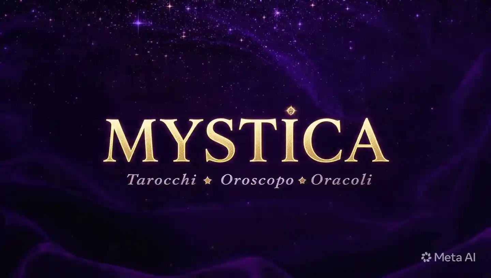

MYSTICA — Il Portale Esoterico Italiano

Le Origini dell'Esoterismo: dalla Mesopotamia all'Era Digitale
MYSTICA nasce dalla volontà di rendere accessibile l'esoterismo autentico a chiunque, ovunque, senza filtri elitari e senza il bisogno di un consulente fisico. Non è un semplice oroscopo del giorno, ma un ecosistema completo che riunisce oltre sessanta strumenti divinatori, tradizioni magiche, astrologia avanzata orientale e occidentale, numerologia e conoscenza esoterica enciclopedica. Dai tarocchi alle rune norrene, dall'I Ching alla numerologia pitagorica, dalla Cabala all'alchimia rinascimentale, fino allo sciamanesimo e al Human Design: tutto in un'unica applicazione pensata per chi cerca risposte concrete, ispirazione quotidiana e una connessione autentica con il sacro.
L'esoterismo occidentale affonda le radici in Mesopotamia, dove i Babilonesi leggevano il cielo notturno per predire il destino dei re e registravano meticolosamente i movimenti planetari su tavolette d'argilla. L'Egitto antico elaborò sistemi di divinazione sofisticati, dalla geomanzia all'interpretazione dei sogni, custoditi nei templi dai sacerdoti. La Grecia classica sintetizzò queste tradizioni orientali nella filosofia ermetica, il cui principio fondante — «Ciò che è in alto è come ciò che è in basso» — attribuito a Ermete Trismegisto, è ancora oggi il cuore pulsante di ogni pratica magica e divinatoria occidentale, dai tarocchi all'astrologia moderna.
Il Rinascimento italiano fu il vero crogiuolo dell'esoterismo moderno: Marsilio Ficino tradusse il Corpus Hermeticum per Cosimo de' Medici a Firenze nel 1463, Pico della Mirandola fuse la Cabala ebraica con la filosofia platonica nelle sue novecento tesi, Giordano Bruno portò l'arte della memoria e la magia naturale nei circoli intellettuali di tutta Europa, pagando con la vita le proprie idee. L'Italia possiede quindi una tradizione esoterica millenaria che raramente trova voce adeguata nel panorama digitale contemporaneo — MYSTICA nasce anche per colmare questo vuoto culturale, restituendo dignità e profondità a un patrimonio spesso banalizzato.
Perché Usare Strumenti Esoterici Online
Gli strumenti esoterici digitali offrono qualcosa che i libri stampati e i consulenti fisici non possono garantire con la stessa immediatezza: disponibilità continua ventiquattr'ore su ventiquattro, privacy totale senza dover condividere le proprie domande più intime con estranei, e un accesso democratico che abbatte le barriere economiche e geografiche. Puoi consultare i tarocchi alle tre di notte quando l'ansia non ti fa dormire, calcolare il tuo profilo numerologico completo mentre sei in treno, leggere l'I Ching mentre aspetti in fila. La tecnologia non svuota il sacro del suo significato — semplicemente lo rende portatile e sempre a portata di mano.
Ogni sezione di MYSTICA è costruita con rispetto scrupoloso per le tradizioni originali: le interpretazioni delle rune attingono direttamente all'Elder Futhark autentico documentato dalle fonti runologiche scandinave, i sessantaquattro esagrammi dell'I Ching seguono la traduzione classica del Libro dei Mutamenti, i rituali di magia bianca, rossa e nera sono documentati nelle fonti storiche e nei grimori tradizionali, non inventati per l'occasione. Non è intrattenimento superficiale confezionato per il clic facile — è un invito sincero all'esplorazione consapevole del proprio mondo interiore, accompagnato da un rigore storico e simbolico che raramente si trova altrove online.
🔍 Scopri le Altre Categorie